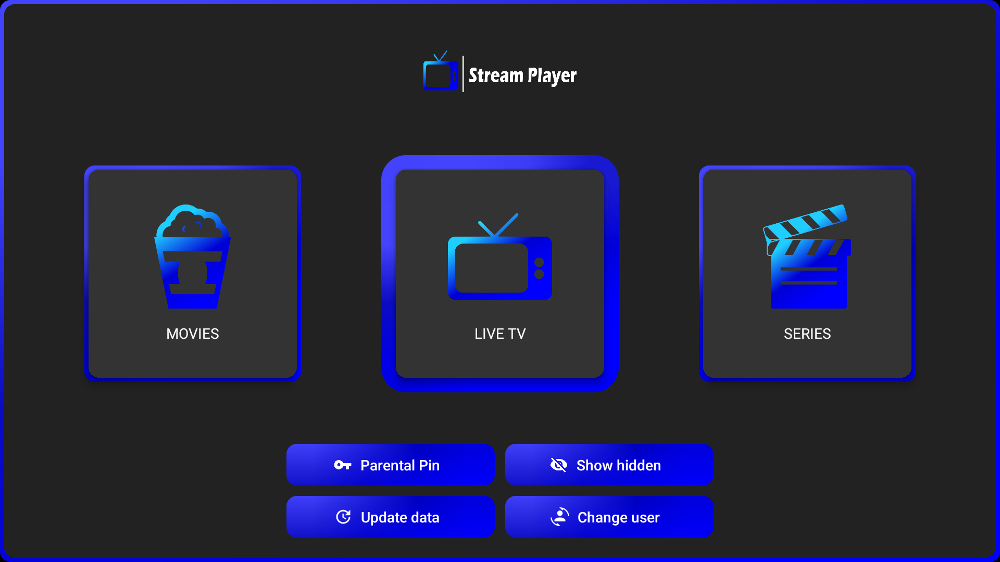

Le meilleur lecteur IPTV pour Amazon Firestick et Android TV

Regardez les chaînes IPTV avec de hautes performances.
Accédez facilement à votre bibliothèque VOD.
Organisez et regardez vos séries préférées.